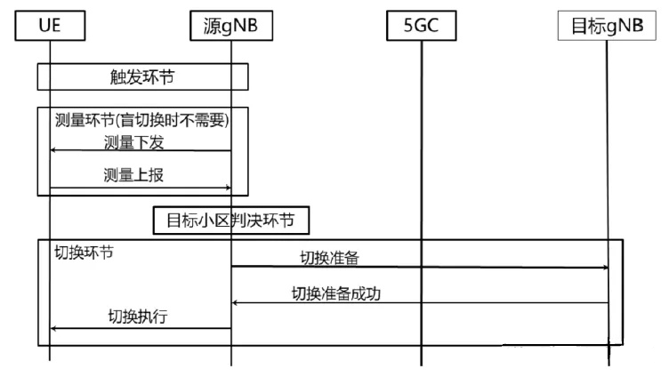
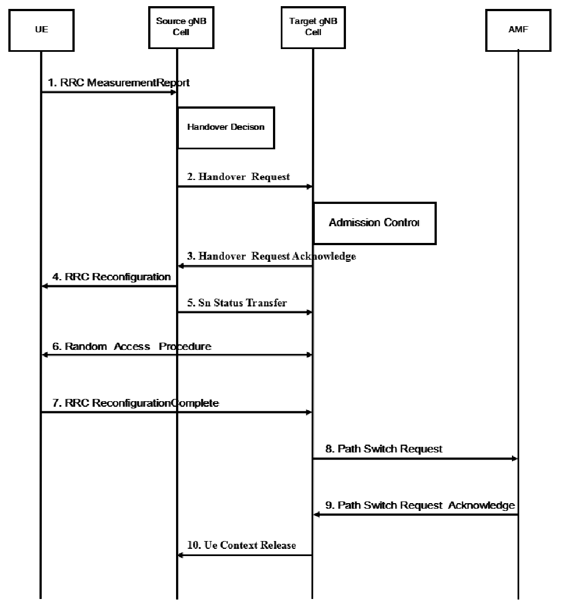
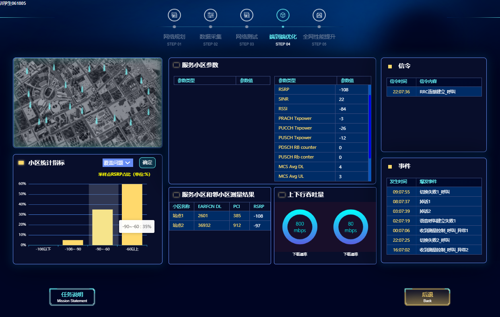
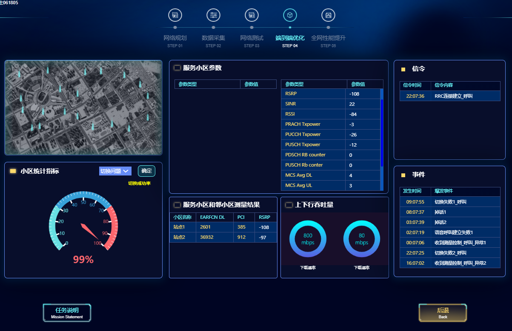
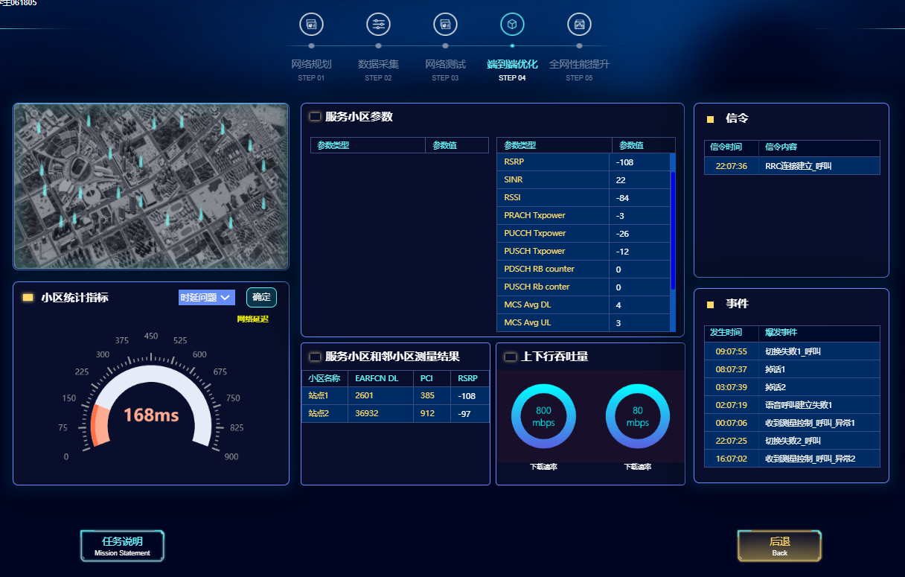
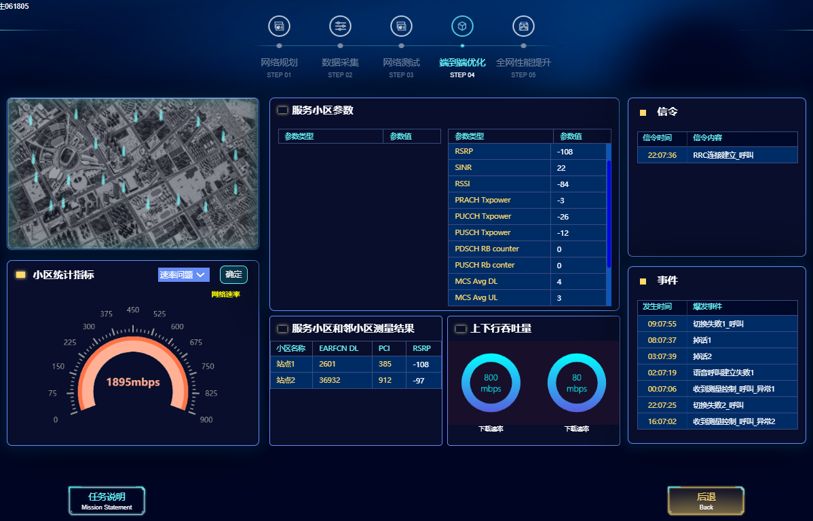

当视频通话卡顿、直播时延升高或业务掉线时，学习者需要判断问题是否来自覆盖、切换、时延、速率、容量或掉线相关因素，并通过测试数据、参数记录和仿真结果验证优化是否达成。
任务2
5G网络优化结果验证
0 / 4
草稿样本
学习任务
从业务体验回到优化证据
输入
教材原文 + 图片 + 表格 + 测评题
输出
能力图谱、资源包、交互页面
状态
专家审核前样本
课程能力图谱
岗位任务牵引的能力链
读取指标
解释指标
定位问题
核查参数
对比结果
输出报告
能力单元
关键知识
评价证据
验证覆盖优化结果
SS-RSRP、SS-SINR、弱覆盖、越区覆盖
覆盖指标表、优化前后截图
验证切换优化结果
A类/B类事件、SA/NSA切换流程
切换流程说明、信令或仿真证据
形成优化证据链
KPI、参数、测试数据、业务体验
验证报告、任务测评、操作记录
知识准备
覆盖、切换与端到端性能
覆盖优化
先优化 SSB RSRP，再优化 SSB SINR。重点消除弱覆盖、越区覆盖和交叉覆盖，并结合工程参数、功率、波束、邻区和规划改造进行验证。

切换优化
围绕测量、判决、执行三个阶段，对 A1 至 A6、B1、B2 等事件进行解释，并区分 SA 与 NSA 场景下的切换流程。

结果验证
验证对象包括覆盖、切换、时延、速率、容量、掉线等场景。判断时需要保留优化前指标、参数调整记录、优化后指标和结论。
实训验证
优化结果验证任务单




证据链完整度：0 / 5
随堂测试
从文本题转为可评价题
质量门禁
进入平台前必须补齐的审核项
专业准确性审核
版权授权确认
图片清晰度与格式转换
题库答案与评分规则
平台接口适配
学习数据回收验证